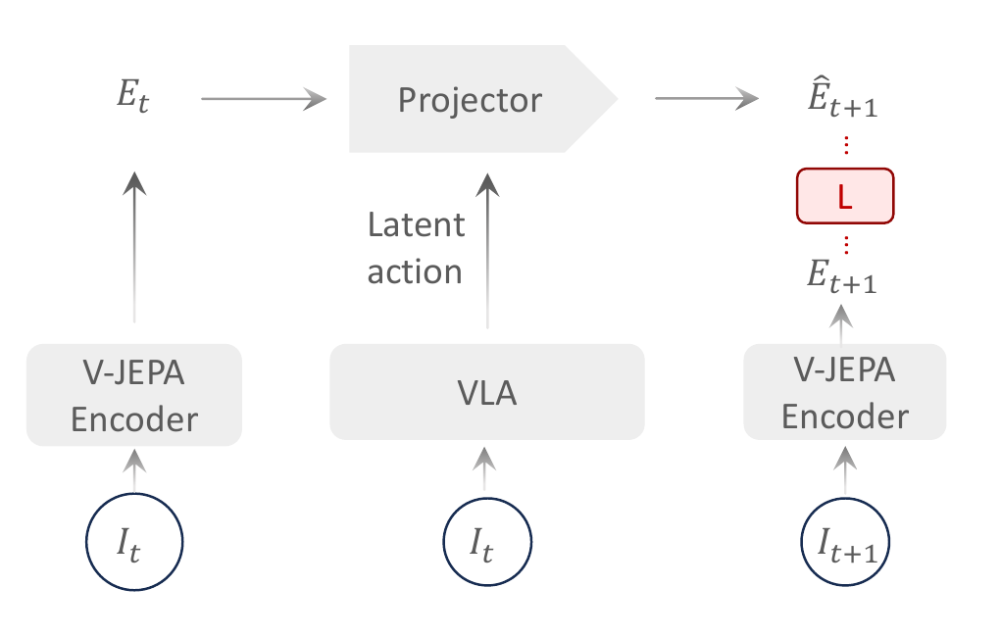

VLA-JEPA: Enhancing VLA with Latent World Model
Jingwen Sun 等 · arXiv:2602.10098 v2 · 2026 技术报告 · Zotero 2H4VLD8C
VLA-JEPA 让学生路径只看当前观测，用 latent action 驱动 predictor 预测冻结 V-JEPA2 encoder 给出的未来表示；未来帧只做 target、绝不进入学生输入，从结构上阻断“把未来拷进 latent action”的信息泄漏。
Introduction：latent action 为什么会从“动作语义”漂成“像素差分”
从互联网视频预训练 VLA 的核心希望，是学到“在交互下世界状态怎样变化”。但相邻帧重建最容易奖励纹理、光照、背景和相机运动；若 latent extractor 同时看到未来，还可能直接编码答案。结果虽然时间上可预测，却不一定对应可控结构。VLA-JEPA 因此不重建像素，也不让学生读取未来，而是在冻结 V-JEPA2 表征空间中预测未来状态。
展开原文 · 设计原则
“predict future latent states ... while preventing future information from leaking”
Related Work：从 latent-action pipeline 转向 leakage-free predictive alignment
LAPA、IGOR、UniVLA 等先从帧对提取离散或连续 latent，再预训练 VLA 并映射真实动作；villa-X 等用机器人状态把 latent 拉向物理语义，但仍依赖由相邻帧抽取“差分标签”的流水线。JEPA 则用 context encoder 预测 target encoder 的抽象表示，天然允许忽略不可预测像素。VLA-JEPA 把 learnable latent token 当作状态转移条件，未来只进入 stop-gradient target branch，并在机器人阶段加入 flow-matching action head。
| 像素 LAM | 目标直观可视，但容易编码外观与相机运动。 |
| Grounded LAM | 借助 proprio/action 监督提高可控性，仍需额外量化/对齐阶段。 |
| JEPA | 预测抽象 target representation，避免为不可预测细节浪费容量。 |
| VLA-JEPA | future 不进入学生输入；world alignment 与机器人 action flow 在微调阶段端到端联合。 |
§1 论文针对的四个失败模式
§2 防泄漏 JEPA：预测表示，不重建像素

1. 编码当前世界状态
多视角帧经冻结 V-JEPA2 编码并拼接。
输入是什么：当前任务提供的原始观测、指令、机器人状态或训练数据。先明确这些输入，才能判断后面的结论是否用了部署时拿不到的信息。
这一步究竟做什么：本步骤执行“编码当前世界状态”。具体来说，多视角帧经冻结 V-JEPA2 编码并拼接。 这里处理的只是整条链路中的一个接口：把上一步的结果整理成下一步能够正确读取和继续计算的形式。
输出到哪里：一组比原始输入更紧凑的内部特征；它不是最终动作或画面。这个结果会交给下一步“VLA 产生 latent action”继续处理。
为什么不能省略：模型不能高效地直接在所有原始像素和长序列上推理；这一步把信息压成后续模块能处理、比较和复用的形式。
2. VLA 产生 latent action
learnable token 结合当前画面和语言，不能读取未来。
输入是什么：来自上一步“编码当前世界状态”的产物：一组比原始输入更紧凑的内部特征；它不是最终动作或画面。本步骤还会按论文设置读取当前条件、时间步或训练信号。
这一步究竟做什么：本步骤执行“VLA 产生 latent action”。具体来说，learnable token 结合当前画面和语言，不能读取未来。 这里处理的只是整条链路中的一个接口：把上一步的结果整理成下一步能够正确读取和继续计算的形式。
输出到哪里：一组比原始输入更紧凑的内部特征；它不是最终动作或画面。这个结果会交给下一步“Predictor 外推未来 latent”继续处理。
为什么不能省略：模型不能高效地直接在所有原始像素和长序列上推理；这一步把信息压成后续模块能处理、比较和复用的形式。
3. Predictor 外推未来 latent
时间因果 world model 用历史状态与 latent action 预测下一段表示。
输入是什么：来自上一步“VLA 产生 latent action”的产物：一组比原始输入更紧凑的内部特征；它不是最终动作或画面。本步骤还会按论文设置读取当前条件、时间步或训练信号。
这一步究竟做什么：时间因果 world model 用历史状态与 latent action 预测下一段表示。
输出到哪里：一组比原始输入更紧凑的内部特征；它不是最终动作或画面。这个结果会交给下一步“只对齐冻结 target”继续处理。
为什么不能省略：模型不能高效地直接在所有原始像素和长序列上推理；这一步把信息压成后续模块能处理、比较和复用的形式。
4. 只对齐冻结 target
未来视频只构造监督，阻止 future-copy shortcut。
输入是什么：来自上一步“Predictor 外推未来 latent”的产物：一组比原始输入更紧凑的内部特征；它不是最终动作或画面。本步骤还会按论文设置读取当前条件、时间步或训练信号。
这一步究竟做什么：本步骤执行“只对齐冻结 target”。具体来说，未来视频只构造监督，阻止 future-copy shortcut。 它控制模型究竟看到什么、需要预测什么，避免后续比较因为输入长度或难度不同而失去意义。
输出到哪里：经过本步骤处理、含义更明确的中间结果。这是图中这条链路的最终产物，随后会进入真实执行、模型更新或指标评测。
为什么不能省略：它把前面得到的内部结果落实为可执行动作、可训练模型或可解释指标，完成从方法到结果的最后一步。
§3 人类视频预训练目标
- $s_{t_k}$
- 冻结 V-JEPA2 target encoder 的未来世界表示，可合并多视角。
- $z_{t_i}$
- VLM 内 learnable latent token 的连续表示，承担 transition condition。
- time-causal mask
- 同一时刻 token 可双向注意；跨时刻只能看过去。
§4 机器人数据：加 flow-matching action head
- $a^t$
- 真实动作 $a$ 与高斯噪声 $\epsilon$ 的线性中间状态。
- $v_\theta(a^t,t\mid z_a)$
- 以 VLA-JEPA 学到的 latent action/world state 为条件预测动作速度。
- $a-\epsilon$
- 从噪声到真实动作的直线目标速度。
- $\mathcal L_{FM}+\beta\mathcal L_{WM}$
- 机器人微调仍保留未来表征预测，避免动作学习把视频预训练得到的 world dynamics 完全遗忘。
第一阶段用无动作视频训练 latent world prediction；第二阶段在机器人轨迹上保留 world alignment，同时让 action query 读取 latent action 并条件化连续动作流。它不需要先训练 VQ codebook、再离线贴 pseudo-label、再换 head 的三段流水线。
§5 证据与局限
实验归因与复现变量
“防泄漏”是结构主张，不能只用最终成功率证明。复现时应加入能偷看 future 的上界、像素重建基线和不同 target encoder，对比 latent probing、视觉扰动鲁棒性与闭环表现。
- 画出完整 attention mask，验证任何 student/VLM token 都不能访问未来 target。
- 说明 V-JEPA2 encoder 是否冻结、target 使用哪一层和怎样跨视角聚合。
- 比较无 latent、随机 latent、future-leaking latent 与正确 JEPA latent。
- 报告 $\beta$ 对 world retention 和动作成功率的双向影响。
- 用相机抖动、背景替换和真实状态变化的对照实验检验“action-centric”而非仅语义不变性。
§6 路线定位
VLA-JEPA 不生成 RGB，也不把 latent action 当离散词典；它用 latent action 条件化 future representation predictor，再把这个隐式 world model 与 action flow head 联合微调。路线图里只保留这一页，Latent Action 与 Joint-AR 两处共用链接。